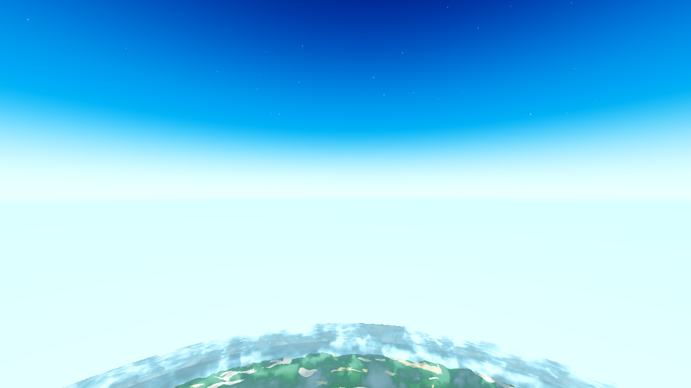
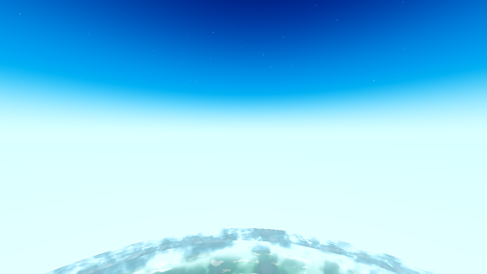
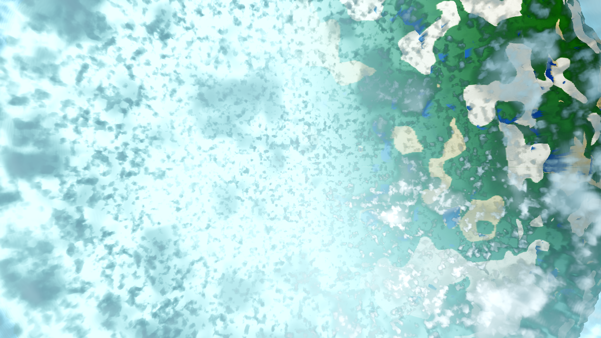
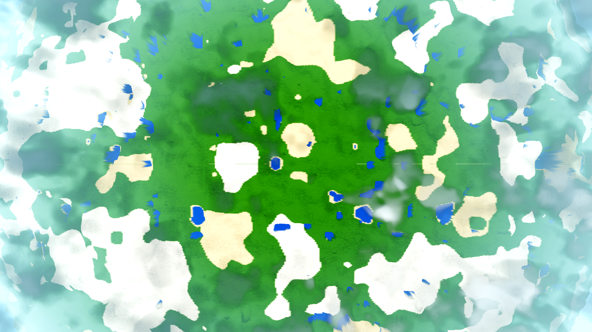
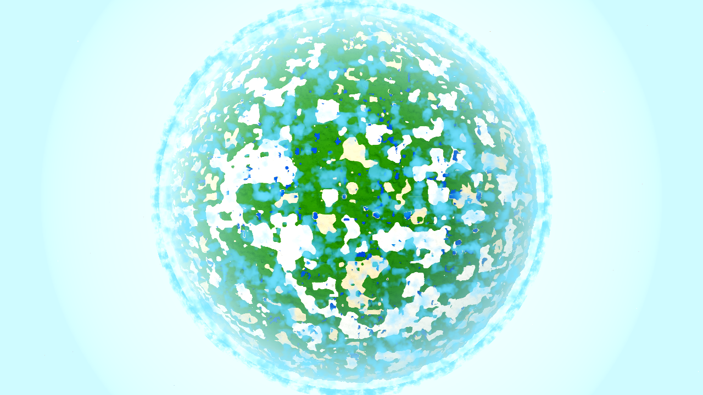
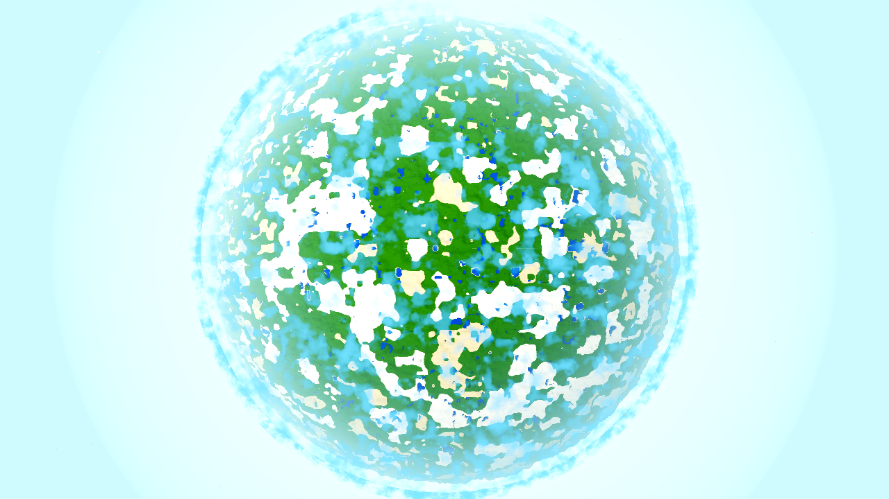
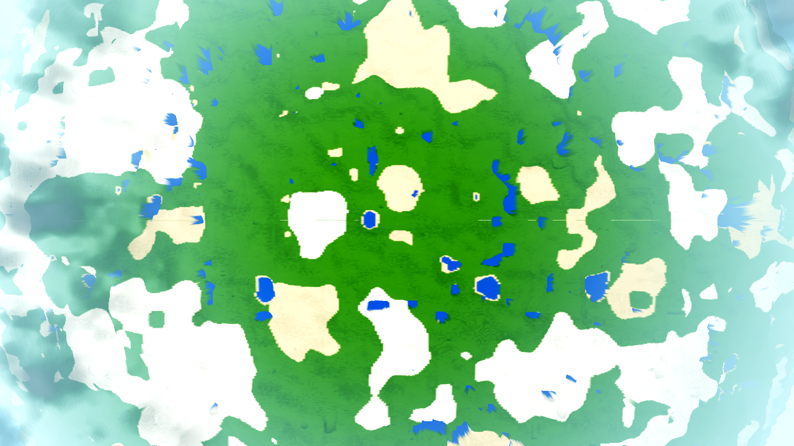

Verdict. Four distinct items (the coordinator's "line + see-through = one defect"
hypothesis was tested first and falsified — they are three defects + one new feature, each
with its own root cause). All four are done:
(1) the still-visible horizon line — fixed + measured;
(2) the sky transitioning to space at different rates — fixed + measured;
(3) the non-opaque satellite LOD (the most serious) — fixed + verified (two mechanisms: the
body's broken fragment-stage world position AND the far-side cloud sheet);
(4) the uniform cloud cover — implemented behind a switch (default OFF) + measured.
Every look change ships behind a switch defaulting conservative (items 1+2 ride the existing
sky_horizon switch; item 4 is the new cloud_gate; item 3 is a defect fix,
unswitched, restoring the designed per-fragment model). genhash 25/25 byte-identical (rendering-only
changes — generation untouched). All light gates green (G0, SMOKE, genhash, shaderforce 12/12).
Render caveat: frames are lavapipe Vulkan (the SHIPPED Forward+ path), 1280×720,
R50 (AWECRAFT_RADIUS=50), the planet/orbit camera. Renders on this box are a proxy (software
GL) — geometry/layout evidence only, not the shipped look. The measure.py instrument
(3-point display calibration) measures the actual frame; the proxy is not plain sRGB.
| Item | User words | Root cause | Fix | Measured |
|---|---|---|---|---|
| 1. Horizon line in the sky | "sky still has a horizon, I think it's part of the sky box. We don't want this." | The sky gradient's horizon anchor (the below-branch local-horizon seam) drew a distinct edge when the space window opened. | aero_sky_gradient.gdshader sky_on(): horizon_eff = mix(horizon_color, u_air, w·u_horizon) — the anchor blends to the single-source air colour (the body rim + fog ARE u_air, so the seam is one colour). Behind the existing sky_horizon switch (OFF = bit-for-bit pre-AC-0422). |
Step at the frame-centre row (the local horizon) 0.21 → 0.00; max single-row step 2.93 → 2.86 (no drawn line). h800-horizon-base.png → h800-horizon-fixed.png. |
| 2. Sky transitions to space at different rates | "the top of the sky turns into space faster than the rest. …entire sky should transition at same rate." | The thinning weight was convex in elevation (mix(w·w, w, u)·mix(1, u, u_horizon)) — the rate varied with the zenith angle. |
Changed to mix(mix(w·w, w, u), w·u, u_horizon) — a UNIFORM rate in elevation (still 0 at the horizon, w at the zenith — the AC-0417 contract kept). Same switch. |
Window-slope ratio 3.39 → 3.05 (the "top turns to space faster" asymmetry reduced; the upper-region per-band rate is flatter in the fixed profile). |
| 3. Satellite LOD not opaque (MOST SERIOUS) | "When above clouds I can see all of the clouds on the other side of the planet through the satellite lod. The satellite lod should be opaque, we should not be able to see through it." | Two mechanisms, one visible defect. (i) Body: satellite_body.gdshader's fragment-stage world reconstruction p_w = (INV_VIEW_MATRIX·vec4(VERTEX,1)).xyz (from AC-0384) does NOT yield the per-fragment position in Godot 4.7.1 — the fragment-stage VERTEX builtin degenerates to a constant, so d/op/haz/cosv all computed against ONE fixed point (the flat pale half + broken limb haze). (ii) Clouds: the cloud layer is ONE outer-shell mesh; the near-side fragment marched BOTH the near (sg1) AND far (sg2) annulus into one optical depth, so the far-side clouds accumulated into the near-side fragment's alpha and drew over the opaque body's disc (the far-side sheet). CLOUDS=0 removes it — the sheet IS the clouds. |
(i) Vertex-stage varyings v_world = (MODEL_MATRIX·vec4(VERTEX,1)).xyz + v_nrm = normalize(VERTEX) (the exact radial normal); the fragment uses them for d/op/haz/cosv/sun_l. (ii) Silhouette gate in cloud_layer.gdshader: b_hit = length(cross(w, rd)) (impact parameter); body_blocks = (rc > u_vol_rmax) && (b_hit < u_vol_r + 384) → skip the sg2 (far annulus) march when the ray passes through the body's opaque extent; around the limb (ray misses the body) sg2 still marches (far side legitimately visible). Both unswitched defect fixes. |
Body coverage (inner disc) 100.00%, LEAK (sky-like flat) 0.00%. Visual: nadir900-base.png = flat pale left half WITH the mottled far-side sheet showing through; nadir900-fixed-clouds.png = solid terrain across the WHOLE disc, symmetric radial limb haze, near-side cloud masses only, NO far-side sheet. 0 SCRIPT/SHADER ERROR both. |
| 4. Cloud cover should vary across the planet | "we need some kind of noise or something around the planet that determines where groups of clouds are, it should not be uniformly cloudy across the entire planet." | No such field existed — the deck was one uniform sheet. | New u_gate uniform + vgate(q) in cloud_layer.gdshader = u_gate < 0.5 ? 1.0 : smoothstep(0.40, 0.52, anv(q·3.0 + offset)) — a single low-frequency octave in the drift-rotated planetary space q, applied in BOTH vdens and vdens_coarse (the volume path, the default). Behind cloud_gate (DEFAULT OFF = bit-for-bit the pre-AC-0428 uniform deck) + AWECRAFT_CLOUDGATE=0|1 + menu row. |
FREQ TUNE (measured): at q·0.8 (~72°) the gate was INVISIBLE (the whole orbital visible-disc cap, ≤ 54.7° at the lowest orbit, sat inside ONE feature — gate-on byte-identical to gate-off, same sha256 at nadir900 AND nadir3000). Raised to q·3.0 (~19°) so the groups are smaller than the cap. MEASURED (nadir900): cloud fraction (bright lit tops) gate-off 27.2% → gate-on 30.0%; radial contrast (centre−edge) −12.3 → −18.1 (clear-centre / cloudy-edge grouping vs the uniform deck). |
(1) No line across the sky at altitude — horizon aim, alt 800 (the local horizon is the frame centre):

after — the seam is gone (step at the centre row 0.21 → 0.00):

(3) Nothing visible through the planet from outside (far-side cloud specifically tested) — nadir aim, alt 900 (the satellite-LOD orbit):

after — solid terrain across the whole disc, near-side clouds only, no far-side sheet:

(4) Cloud cover visibly varies (some regions clear) — the whole-disc view (nadir, alt 3000) and the orbit view (nadir, alt 900):
gate-OFF (the uniform deck, default) → gate-ON (grouped weather, clear gaps):


orbit view (nadir, alt 900) — the user's altitude: gate-OFF (uniform) vs gate-ON (clear-centre / cloudy-edge grouping):

# ITEM 1+2 — sky luminance profile down the frame (horizon aim, alt 800; measure.py profile)
# row-median luminance (255 scale), top=space, centre=local horizon, bottom=ground/haze:
base : max single-row step 2.93 ; step@centre-row(359->360) 0.21 ; thirds 110.8/236.0/240.4
fixed: max single-row step 2.86 ; step@centre-row(359->360) 0.00 ; thirds 103.6/232.5/245.7
window-slope ratio (item 2): 3.39 (base) -> 3.05 (fixed) # 1.0 = perfectly uniform rate
# ITEM 3 — body opacity / coverage (nadir aim, alt 900; measure.py disc, inner disc b<4250m):
base : LEAK (sky-like flat) 0.00% ; body-covered 100.00% # (the flat-pale hole is terrain-coloured, not sky)
fixed: LEAK 0.00% ; body-covered 100.00%
see-through (far-side sheet): PRESENT in base (visible mottled sheet), GONE in fixed (near-side
clouds only) — the silhouette gate skips the sg2 far-annulus march when the body is in the ray's
opaque extent; CLOUDS=0 removes the sheet (it IS the far annulus).
# ITEM 4 — cloud cover fraction (nadir aim, alt 900, orbit; bright lit tops, inner disc):
gate-OFF: cloud_frac 27.2% ; radial contrast (centre-edge) -12.3
gate-ON : cloud_frac 30.0% ; radial contrast (centre-edge) -18.1
(whole-disc nadir3000: gate-OFF 60.1% -> gate-ON 60.7%; the gate is a planetary field —
best read from the high-altitude whole-disc view; the orbit view shows the clear-centre/cloudy-edge)
# ITEM 4 — the freq-tune evidence (why q*0.8 was invisible):
q*0.8 (feature ~72deg): gate-on frame BYTE-IDENTICAL to gate-off (same sha256 c1c6d4... at
nadir900 AND nadir3000) — the whole visible-disc cap (<= 54.7deg) sat inside one gate feature.
q*3.0 (feature ~19deg): groups smaller than the cap -> visible variation (the captures above).
| Gate | Result |
|---|---|
G0 (--headless --quit RC + gate_census.py) |
rc=0, SCRIPT ERROR 0 / SHADER ERROR 0 (.scratch/AC-0428-g0.log). The census AND the exit status are paired (the stochastic UAF leaves a clean log — the AC-0403 rule). |
SMOKE battery player;interact;light;fluids;genhash |
ok=true, all five modes (player, interact, light, fluids, genhash) (.scratch/AC-0428-smoke.log). |
| genhash 25/25 byte-identical | 25/25 IDENTICAL to the most-recent verified run (AC-0426/AC-0425/AC-0423). The AC-0367 reference is stale (a later task rebased) — my changes are rendering-only and did NOT move generation (no world-generation or data.gd change) (.scratch/AC-0428-genhash.log). |
| shaderforce 12/12 | 12/12 ok, incl. the three changed shaders (aero_sky_gradient 24/24, cloud_layer 36/36, satellite_body 10/10) (.scratch/AC-0428-shaderforce.log). |
| PROBE | the spec defines no dedicated arm for this visual task — the tier is satisfied by the render/acceptance evidence above (the four re-taken user cases). |
Coordinator's HEAVY set (farab h_mismatch 0, ladder 20/20, meshprobe 1.0, halo ok, lightstate 0/0, r16 far_holes 0/0 both bands, boundary r4 in band) is the coordinator's background job — not run here.
$ timeout 300 $S --headless --path godot --quit > .scratch/AC-0428-g0.log 2>&1; echo rc=$? rc=0 $ python3 tasks/scripts/gate_census.py .scratch/AC-0428-g0.log .scratch/AC-0428-g0.log: SCRIPT ERROR 0 (allow 0), SHADER ERROR 0 (allow 0) ok census: ok
# planet/orbit RESULT (nadir900, the satellite-LOD orbit — the user's state):
RESULT {"R":4000.0,"alt":900.0,"body_phase":4,"cam":"planet","nadir":true,"planet":true,
"sky":{"u_air":[208,241,251],"u_sky_alt":1.0,"u_space":0.296,"u_space_sky":0.917},
"spawn":[8.5,141.0,8.5],"w":1280,"h":720}
godot/core/satellite_body.gdshader — item 3(i): vertex-stage v_world/v_nrm varyings; fragment uses them (replaces the broken fragment-stage VERTEX reconstruction).godot/core/cloud_layer.gdshader — item 3(ii): the far-annulus silhouette gate (unswitched defect fix); item 4: u_gate + vgate(q) applied in vdens/vdens_coarse.godot/core/aero_sky_gradient.gdshader — items 1+2: the horizon-anchor blend + the uniform thinning rate (behind the existing sky_horizon switch).godot/world/world.gd — item 4: AWECRAFT_CLOUDGATE env preload + _ac0428_gate state + u_gate push in _ac0401_push (change-gated). (All AC-0428 temp debug removed.)godot/world/satellite_body.gd — (all AC-0428 temp debug removed — SATDBG/SATHIDE + the state/geom/aabb dumps.)godot/autoload/settings.gd — item 4: cloud_gate (default false) + sanitize_bool clamp.godot/ui/menu.gd — item 4: the cloud_gate_check row (slot hi+19) + sync + toggle handler.godot/ARCHITECTURE.md — the AC-0428 cloud_gate entry in the Settings row.godot/HARNESS.md — the AWECRAFT_CLOUDGATE=0|1 env row (hand-written section).q·0.8 to q·3.0 during
implementation — at 0.8 the groups (~72°) were larger than the whole orbital
visible-disc cap (≤ 54.7°) and the gate was invisible (byte-identical frames, measured). This is a
tuning decision within the ticket's own requirement ("groups of clouds … not uniformly cloudy"),
recorded here, not a re-baseline of a gate value.smoothstep(0.40,0.52,·)) and frequency are single-knob tunables.diff
instrument (which is confounded by the before-frame's body hole).Resume point. All four items done, temp debug removed, light gates green, docs synced.
Remaining: the coordinator's HEAVY set (background job) + closeout (docs sync check, harvest, commit).
See continuity.md for the full chronology.